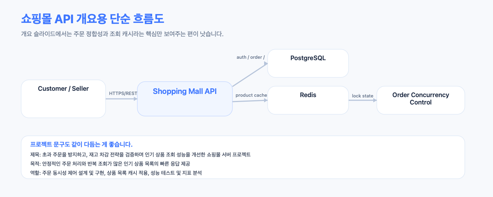
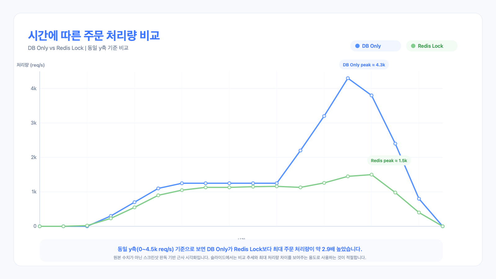
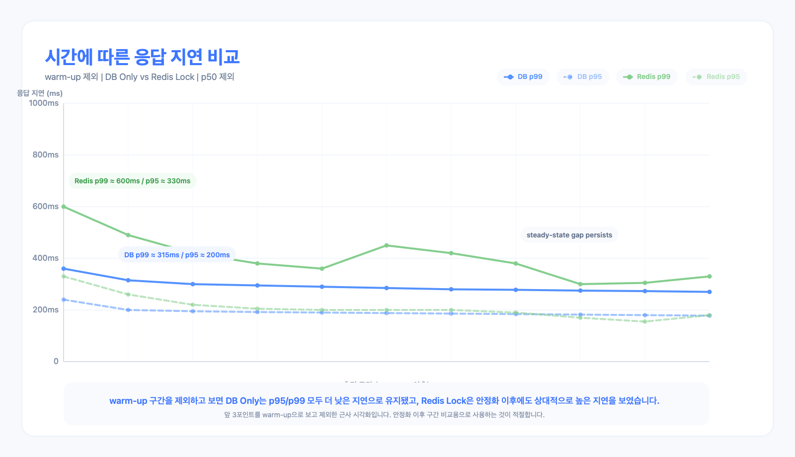
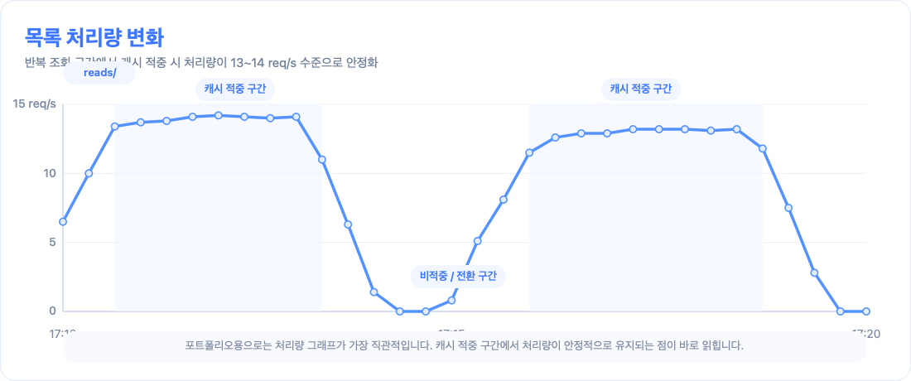
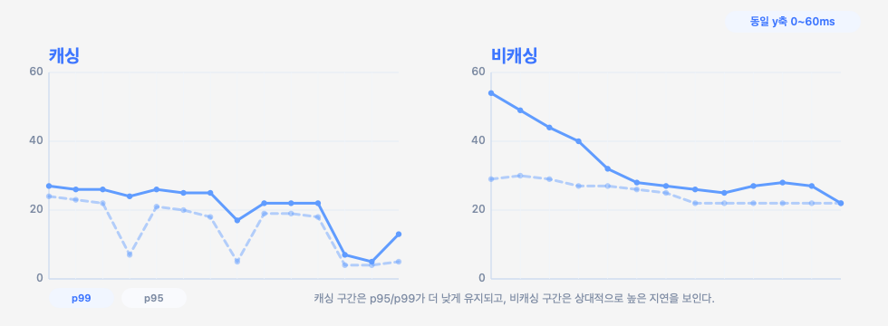
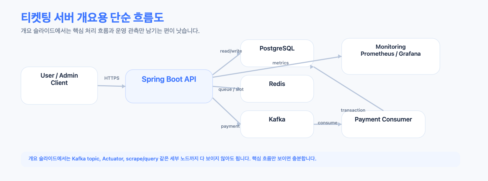
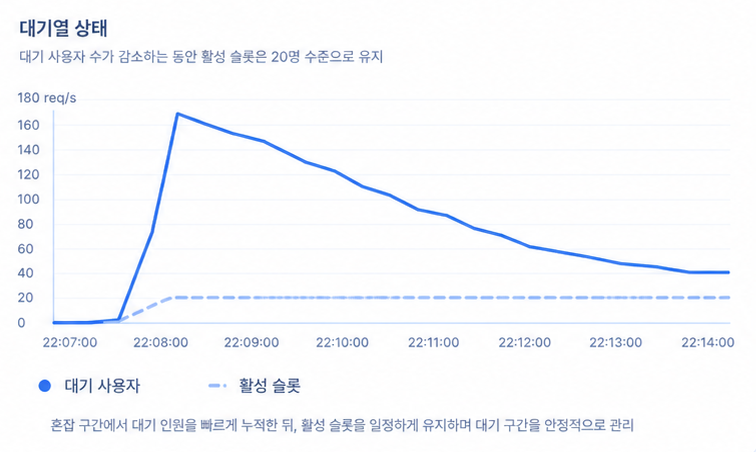
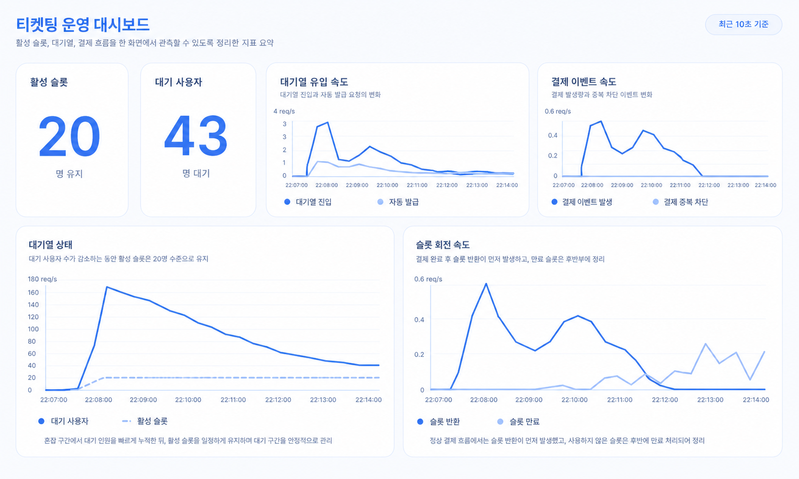

지표 1
활성 슬롯이 20명 수준으로 유지되는가?
백엔드 엔지니어
문제의 원인을 파악하고, 구조적 개선을 통해 안정적인 흐름을 만드는 개발자입니다. 직접 검증하며 성능을 비교하고, 더 나은 해결 방법을 끝까지 고민합니다.
1인 개발 · 2026.01 ~ 2026.02 · 백엔드 설계 및 구현



현재 단일 인스턴스 구조에서는 DB 조건부 차감만 적용한 방식이 더 효율적이었습니다. 최대 처리량은 약 1.5k req/s에서 4.3k req/s로, 응답 지연은 p95 200~450ms에서 150~220ms 수준으로 더 안정적이었습니다.


1인 개발 · 2026.02 · 백엔드 설계 및 구현


혼잡 구간에서 대기열은 일시적으로 약 140명까지 증가했지만, 활성 슬롯은 20명 수준으로 안정적으로 유지했습니다. 이후 대기열이 지속적으로 감소해 종료 시점에 거의 해소되며, 동시 진입 제어와 처리 안정성을 확인했습니다.
시나리오 : 대기열의 70% 결제(슬롯 반환), 30% 토큰 만료

활성 슬롯이 20명 수준으로 유지되는가?
대기 사용자 수만 감소하고 결제 이벤트 발행량은 급증하지 않는지 확인
슬롯 반환과 만료가 정상적으로 순환하는지 확인